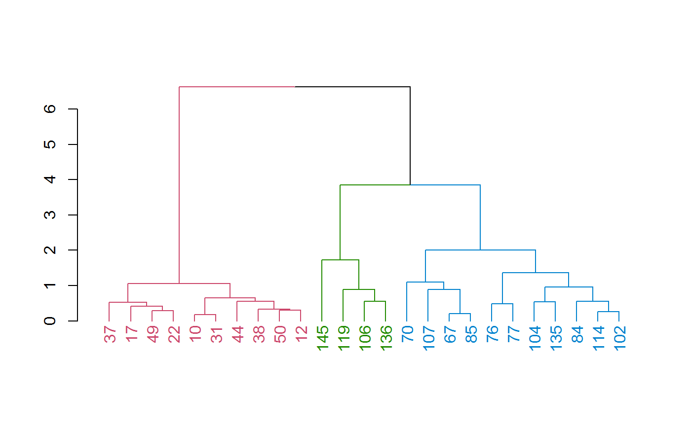
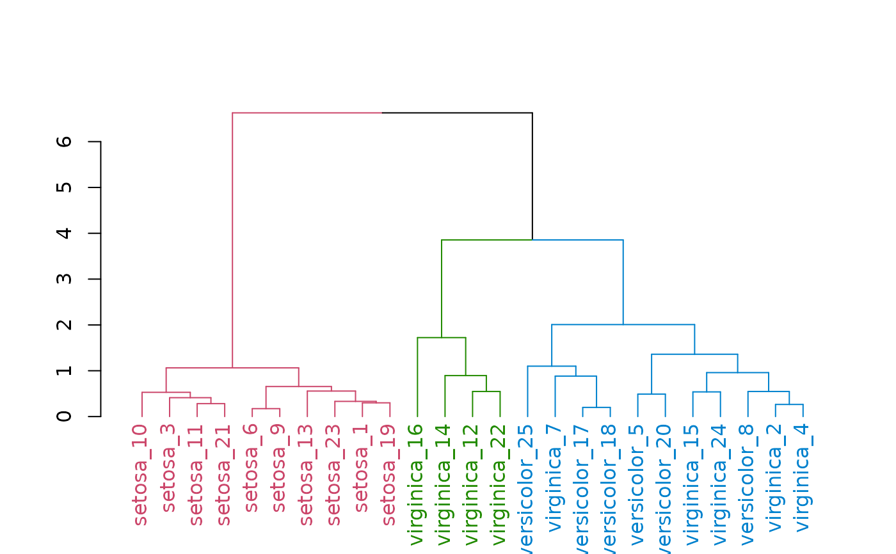
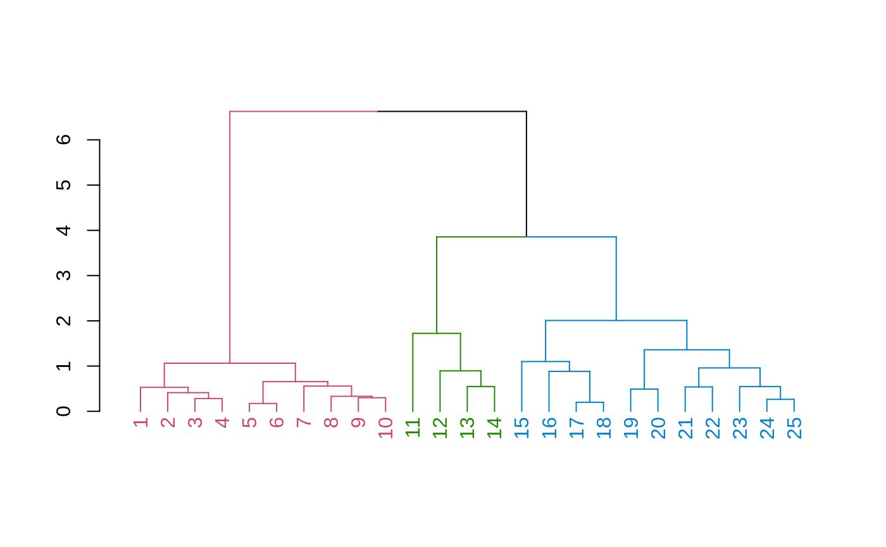

Convenience functions for updating the labels of a dendrogram. set_labels and place_labels differs in their assumption about the order of the labels. * set_labels assumes the labels are in the same order as that of the labels in the dendrogram. * place_labels assumes the labels has the same order as that of the items in the original data matrix. This is useful for renaming labels based on some other columns in the data matrix.
set_labels(dend, labels, ...)
| dend | a dendrogram object |
|---|---|
| labels | A vector of values to insert in the labels of a dendrogram. |
| ... | Currently ignored. |
The updated dendrogram object
ss <- c( 50, 114, 17, 102, 76, 10, 107, 84, 31, 37, 49, 106, 44, 119, 104, 145, 67, 85, 12, 77, 22, 136, 38, 135, 70 ) small_iris <- iris[ss, ] small_iris[, -5] %>% dist() %>% hclust(method = "complete") %>% as.dendrogram() %>% color_branches(k = 3) %>% color_labels(k = 3) %>% plot()# example for using place_labels small_iris[, -5] %>% dist() %>% hclust(method = "complete") %>% as.dendrogram() %>% color_branches(k = 3) %>% color_labels(k = 3) %>% place_labels(paste(small_iris$Species, 1:25, sep = "_")) %>% plot()# example for using set_labels small_iris[, -5] %>% dist() %>% hclust(method = "complete") %>% as.dendrogram() %>% color_branches(k = 3) %>% color_labels(k = 3) %>% set_labels(1:25) %>% plot()